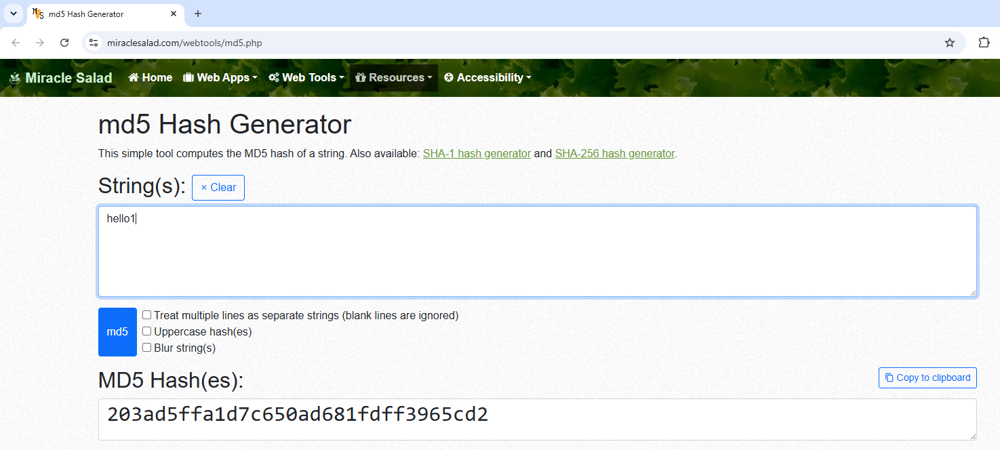
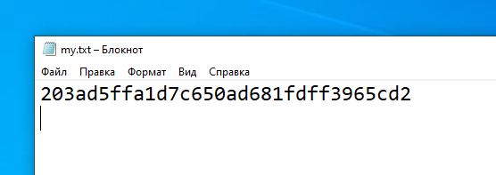
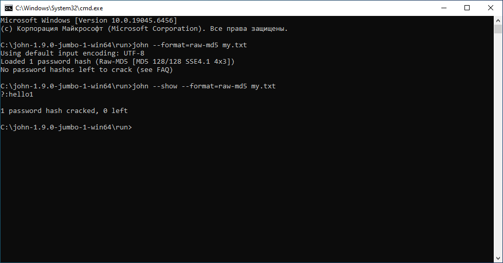
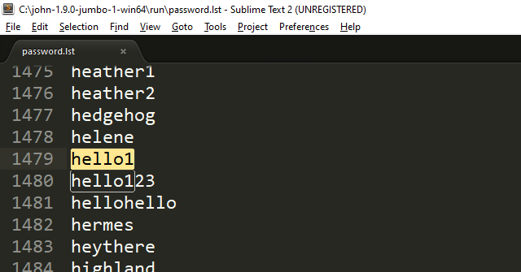
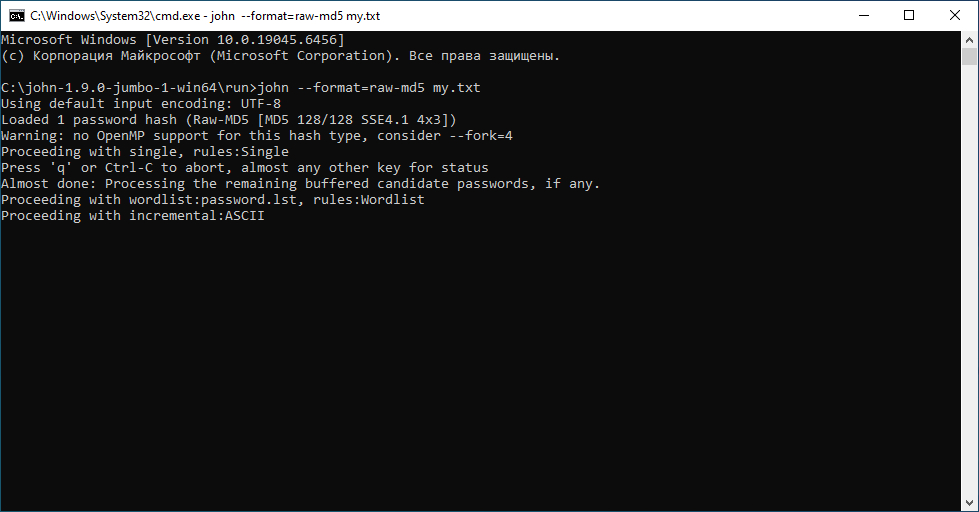

Для начала работы нам потребуется программа John The Ripper для расшифровки хешей. В дистрибутиве Kali Linux она, как правило, уже входит в стандартный набор инструментов, поэтому дополнительно скачивать и устанавливать её не требуется. В ОС Windows lля загрузки данной программы зайдем на сайт: https://www.openwall.com/. Теперь в браузере, находясь на этом сайте, нажимаем сочетание клавишь Ctrl + F для поиска текста по странице, и в окне поиска вводим первые буквы названия программы John - и вас перекинет на то место страницы где можно загрузить данную программу. У меня ссылка на странице John The Ripper обозначена текстом:
John the Ripper password cracker for Linux, Mac, Windows, ... (and wordlists for use with it and with other tools)
Нажимаем на ссылку мышей, загружаем программу.
У меня загрузился вот такой архив в папку Downloads:
john-1.9.0-jumbo-1-win64.zip
Из названия архива можно заметить версия программы для win64. Вы можете загрузить win32 версию если вы работаете с 32-х разрядной ОС Windows, поскольку я работаю в 64-х разрядной ОС Windows я загрузил версию программы win64.
После загрузки john-1.9.0-jumbo-1-win64.zip распаковываем архив в отдельную папку. К примеру вы разрархивировали архив и папку положили на диск C:
C:\john-1.9.0-jumbo-1-win64
Заходим в проводик по данному адресу C:\john-1.9.0-jumbo-1-win64 и открываем внутри папку run:
C:\john-1.9.0-jumbo-1-win64\run
В папке run находиться наша программа john.exe и все что может потребоваться для ее работы.
Теперь начинается самое интересное - нам нужно сделать хеш, который мы будем расшифровывать при помощи John The Ripper.
В поиске Google ищем строку "md5 Hash Generator". Когда Google выдал результаты поиска, переходим по ссылке (здесь у меня на странице, или из поиска Google переходим) https://www.miraclesalad.com/webtools/md5.php, после перехода по ссылке видим что то вроде такого:

Как вы можете заметить я уже ввел строку, которую мы хешируем, это слово:
hello1
И хеш MD5 этой строки будет 32 символьное значение:
203ad5ffa1d7c650ad681fdff3965cd2
Далее в проводнике заходим в папку:
C:\john-1.9.0-jumbo-1-win64\run
И внутри создаем пустой текстовый файл my.txt и первая строка этого файла- наш хеш. У вас должно быть что то вроде такого:

Сохраняем наш текстовый файл my.txt и выходим из Блокнота. Теперь у нас есть текстовый файл с хешем который мы будем взламывать:
C:\john-1.9.0-jumbo-1-win64\run\my.txt
Теперь открываем Проводник в папке нашей программы, то есть в адресной строке проводника должно быть:
C:\john-1.9.0-jumbo-1-win64\run
Теперь из адресной строки удаляем эту строку пути, тут же в адресной строке пишем cmd и нажимаем Enter - и по этому расположению откроетья командная строка консоли Windows.
Итак в папке с программой (и тут же у нас файл с хешем my.txt) открылось окно консоли. Мы знаем, наш расшифровываемый хеш MD5 поэтому в опциях следюущей команды это указываем, команда ниже указывает что наш расшифровываемый хеш это MD5, запускает john.exe программу расшифровщик для нашего файла с хешем my.txt:
john --format=raw-md5 my.txt
Команда выше расшифровывает наш хеш.
Команда ниже выводит расшифрованных хеш на экран:
john --show --format=raw-md5 my.txt
Скриншот сессии расшифровки нашего хеша ниже:

Как видим вывод работы программы на скриншоте- мы расшифровали наш хеш и вывод hello1.
Немножечко углубимся в теорию почему так произошло.
В этой же папке с программой john.exe есть файл с паролями:
C:\john-1.9.0-jumbo-1-win64\run\password.lst
Давайте этот файл password.lst откроем в Блокнот, и поищем, оказывается наше слово hello1 есть в списке в этом файле:

Таким образом, программа John The Ripper ищет сначала по словарю, если нет в словаре- программа начинает генерировать пароли самостоятельно, преобразовывать их в хеши, и сравнивать с нашим, то есть фактически включается режим перебора, режим brute force (брут форса).
Что бы это продемонстрировать, давайте для хеша возьмем слово, которого нет в словаре программы, например это слово:
helloworld
Я проверил, это слово helloworld не содержиться в словаре password.lst. На сайте md5 Hash Generator (см.выше) для этого слова будет такой хеш (так же фиксированный размер 32 символа):
fc5e038d38a57032085441e7fe7010b0
Сохраним этот хеш в файле my.txt, дадим команды на расшифровку и видим следующий скриншот:

Сообщение
Proceeding with incremental:ASCII
означает, что John the Ripper начал перебор паролей в режиме Incremental с набором символов ASCII то есть используется набор символов ASCII (буквы, цифры, знаки пунктуации и т.д.). Следующая команда автоматически после запуска сразу начинает перебор паролей для хешей из файла my.txt.:
john --incremental=ASCII --format=raw-md5 my.txt
Команда выше определяет хеши формата raw-md5 (так как указан --format=raw-md5). Переходит в режим --incremental=ASCII. Начинает генерировать кандидаты на пароль из набора символов ASCII и сравнивать их хеши с имеющимися. Если находит совпадение, выводит найденный пароль и продолжает работу (если не задан режим остановки после первого результата).
Во время работы можно:
нажать любую клавишу (кроме q) — John покажет текущий статус; нажать q или Ctrl+C — остановить процесс. Прогресс при этом обычно сохраняется в файле сессии, и позже можно продолжить работу командой john --restore.